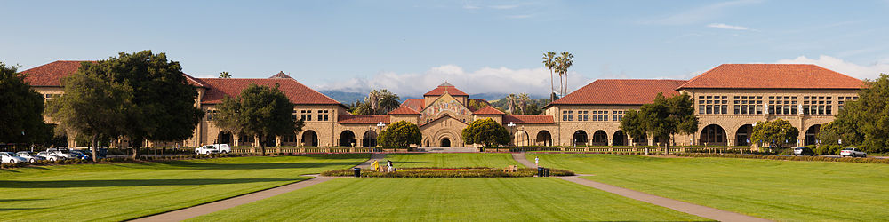

Ever have trouble finding out what to do on a Friday night or when the President is coming to campus? Do you find yourself missing out on experiences because you were never informed or forgot about them? Fret no further. Stanford Events provides a great way to organize and find about about everything happening on Stanford's campus. You can search and view events by genre and then store them so you'll never forget about them. It's that simple.
This application was made by Ramon Flores and Juan Posadas for the CS 184 class. Currently sophomores studying Computer Science at Stanford University. You can find out more about Ramon at his website , and more about Juan here.
